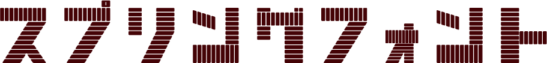
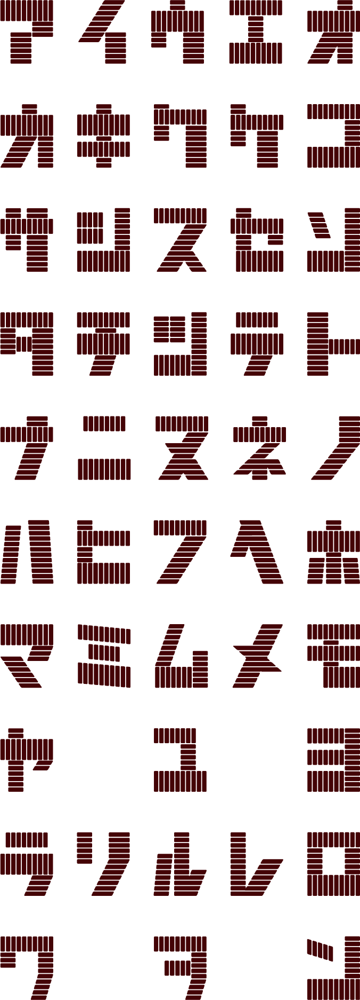

<< フォント一覧に戻る

（レインボースプリング）概要
昭和62年頃流行。鉄、プラスチックをバネ状に加工した玩具。ユニークな動きをするのが特徴。大きさはロングサイズ、ミニサイズ等があり、通常の丸型の他に、星型やハート型もある。
フォントについて
レインボースプリングはバネの伸びている雰囲気を出すために縦に長く制作しました。一画一画を伸びやかに繋げることで、階段を下りていくバネのしなやかな動きを表現しています。
FONT LIST
収録文字一覧

TRY IT
スプリングフォントで試してみる
ひらがなを入力すると、カタカナに変換してプレビューします。
※ 日本語入力の変換途中はそのまま入力できます。変換確定後、ひらがな・カタカナ以外は除外されます。
※ スプリングフォントの濁点・半濁点付き文字は「プ」「グ」のみ収録されています。
ここに入力
レトロナフォント
⬇
フォントをダウンロード
※ フォントデータは準備中です